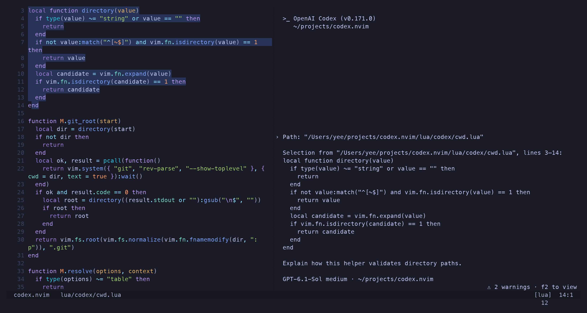
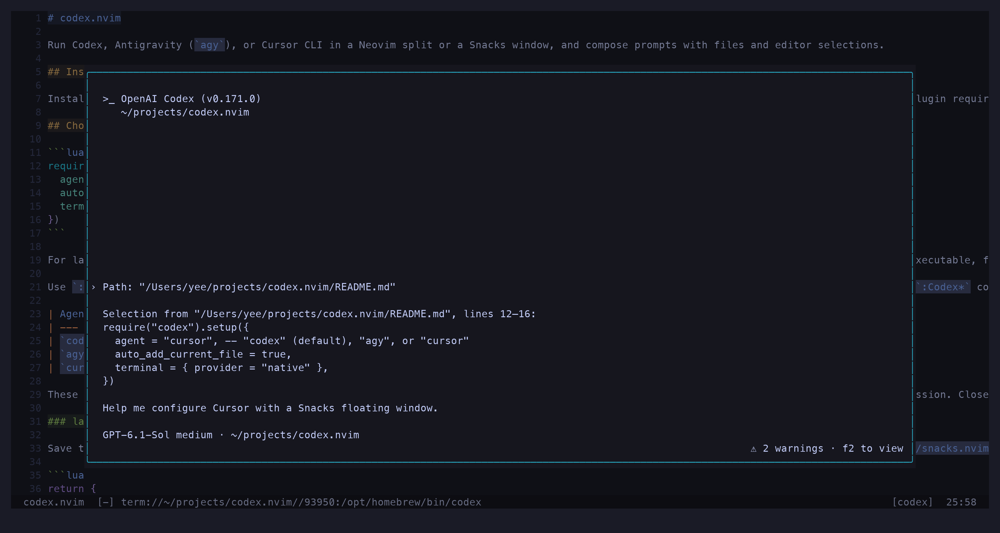

Bring your editor into the conversation.
Add file paths, directories, or selected code to the prompt. Character, line, and block selections include your unsaved edits.
:AgentAdd :AgentSend
AI coding CLIs, at home in Neovim
Keep your code and conversation together. Run Codex, Antigravity, or Cursor in Neovim, and bring the right context into every prompt.

Stay in the flow
Add file paths, directories, or selected code to the prompt. Character, line, and block selections include your unsaved edits.
:AgentAdd :AgentSend
Use a native split or an optional Snacks window. Hide the terminal, return to your code, and reopen it with the same session and draft.
:Agent :AgentFocus
Choose Codex, Antigravity, or Cursor. Resume the latest saved conversation with one command. Existing :Codex* aliases still work.
:AgentResume
Another way to work
Prefer a conversation over your editor? Use a Snacks float, then toggle it away when it’s time to code.

Make yourself at home
Install and log in to your preferred CLI, then add this spec to your lazy.nvim configuration.
Requires Neovim 0.11 or newer. This example uses a native split; see the docs for Snacks float configuration.
All configuration optionsCLI command: codex
return {
"YeeZC/codex.nvim",
main = "codex",
cmd = {
"Agent", "AgentOpen", "AgentFocus",
"AgentClose", "AgentAdd", "AgentSend",
"AgentTreeAdd", "AgentResume", "AgentYolo",
},
opts = {
agent = "codex",
auto_add_current_file = true,
terminal = { provider = "native" },
},
}The everyday commands
:AgentOpen:AgentAdd:AgentSend:AgentTreeAdd:Agent:AgentCloseOne active session at a time. Close it before switching agents or resuming a saved conversation. Context is inserted as bracketed paste and stays in your draft until you submit it.